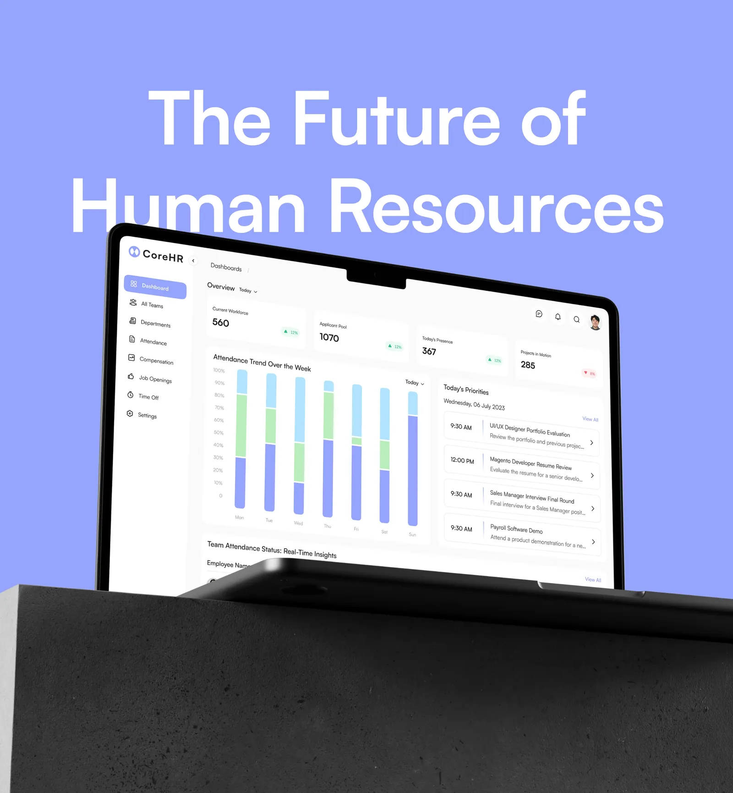
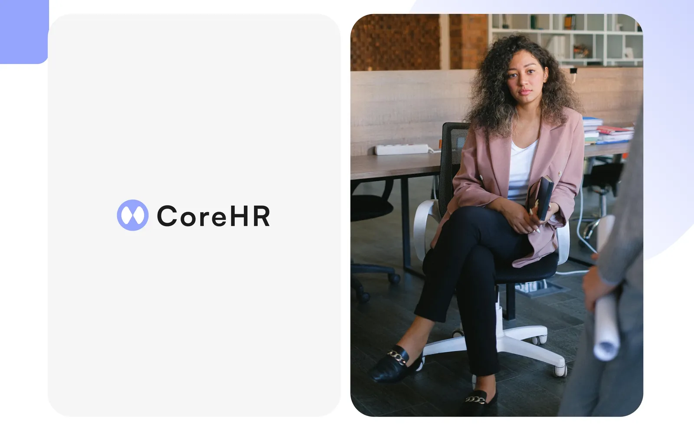
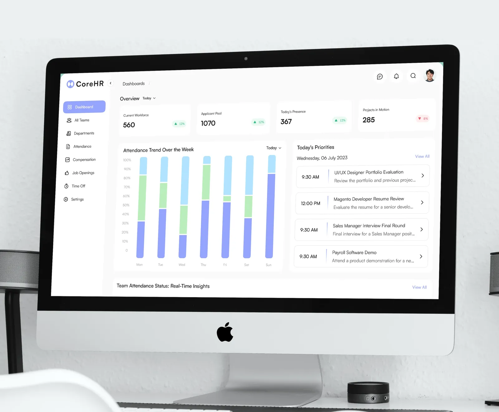
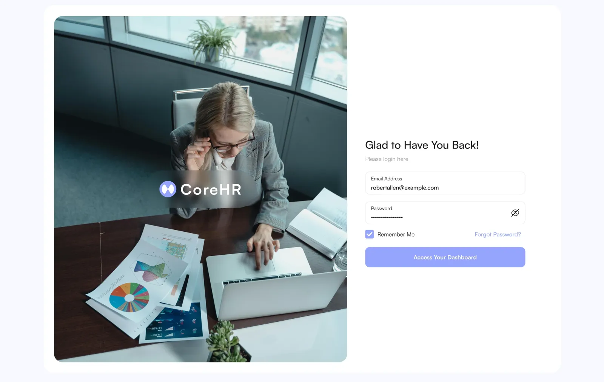
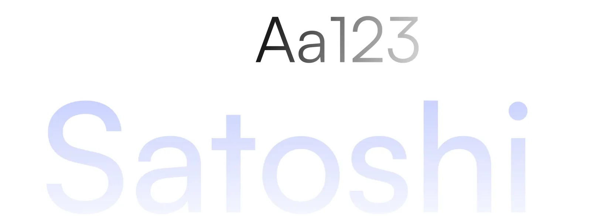
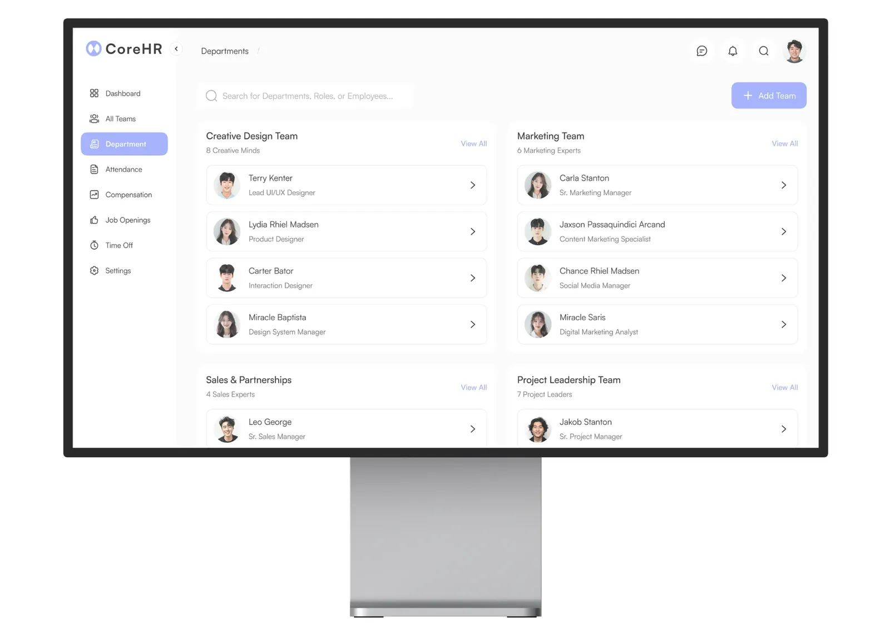
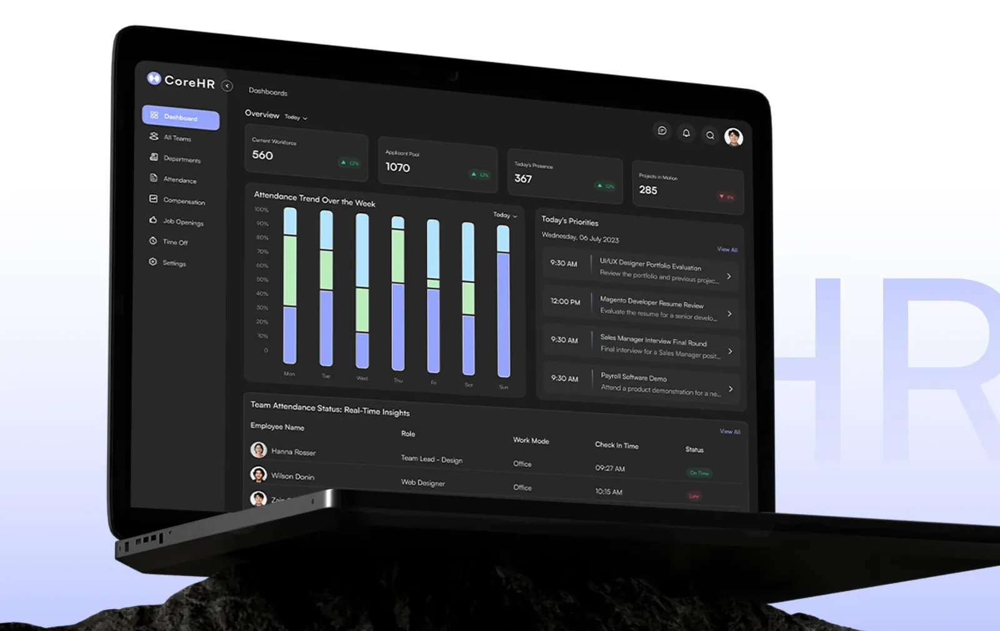
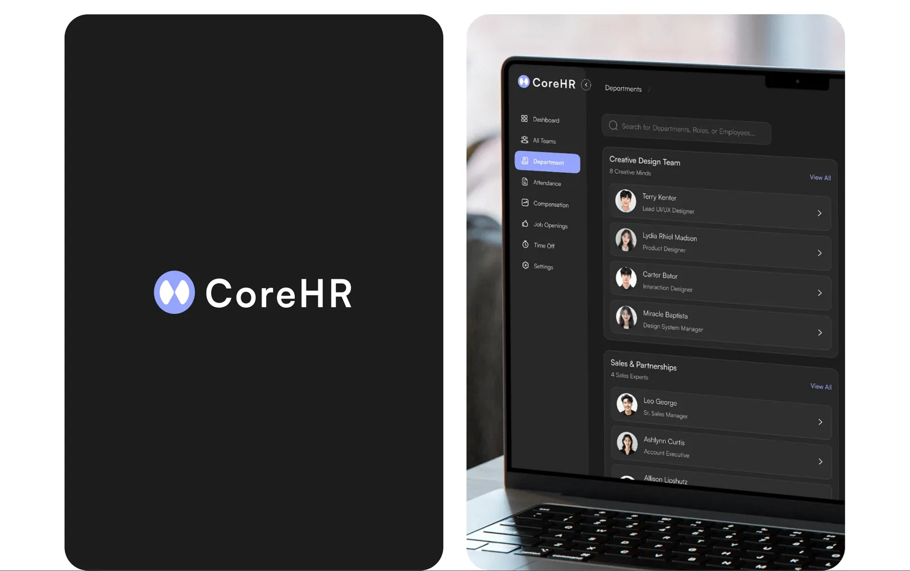
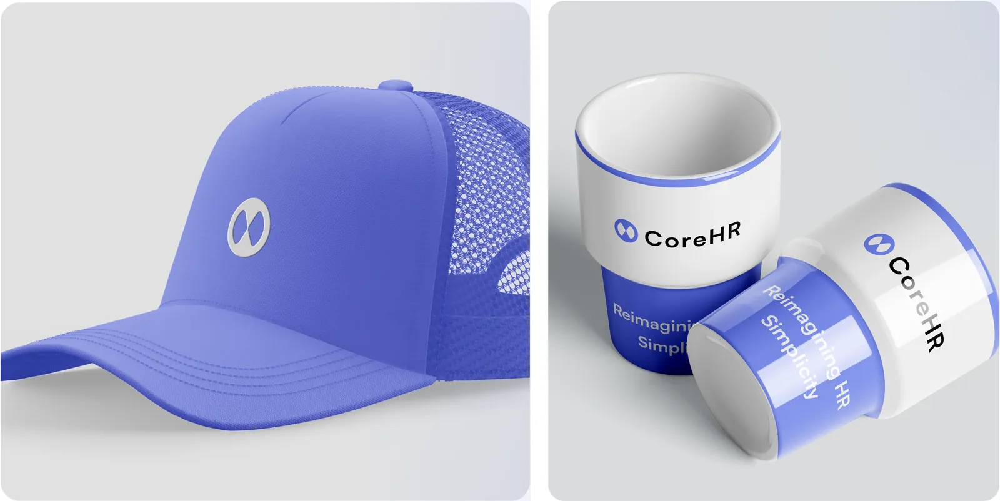

TravelSphere
A travel app for discovering, planning and booking trips, with its own brand identity.
UI/UX case study · 2024
A comprehensive HR management system that streamlines HR processes within organisations.

01 · Client/Project

02 · Scope of Work
The design journey was structured around key phases to ensure a user-centered and functional experience.
03 · Sprints · Strategy
Establish a comprehensive HR management system focusing on efficiency and usability.
Address key HR challenges like attendance, payroll, and employee scheduling.
04 · Sprints · Discovery
Conducted interviews and surveys to understand the specific needs of HR managers and employees.
Mapped user touchpoints to streamline HR processes and remove bottlenecks.
User-centered interviews to ensure the design aligns with end-user expectations.
Understanding HR Challenges
We conducted comprehensive research to identify the pain points HR teams face, from managing schedules to handling payroll and employee data.
05 · Sprints · Solution
Focused on a responsive, mobile-friendly interface to cater to on-the-go HR professionals.
Clean, modern visual design to emphasize usability and enhance the overall experience.
06 · Assistant
The CoreHR assistant provides quick responses to employee inquiries and supports HR teams with managing schedules, payroll, and employee data—all tailored to your company's needs.
Assistant

07 · Reimagining HR
CoreHR is designed to simplify HR processes and provide a user-friendly experience for HR managers and employees alike.

08 · Typography & Colors
A modern and highly legible sans-serif font, Satoshi is designed for versatility and functionality across both digital and print mediums. Its clean, geometric lines provide an excellent balance between aesthetics and readability, making it a perfect choice for professional platforms like CoreHR.


09 · Dark Theme Overview
Highlight the user-centric reasoning behind introducing dark mode, focusing on usability, reducing eye strain, and offering a sleek, professional look.

Focus on Simplicity
Prioritizing clean, modern UI elements that provide clarity and ease of navigation.

10 · Branding
Our branded essentials ensure that CoreHR's identity isn't just digital—it's tangible, creating a lasting connection with the audience.

Full project
The complete project, with all screens and details, is published on my Behance profile.
Let's work together
I'm open to full-time roles and freelance projects. Drop me a line and I'll get back to you soon.